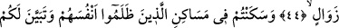

ZÂLİMLERDEN
HABERSİZ SANMA!
42. (Rasûlüm!) Sakın, Allah’ı zalimlerin yaptıklarından habersiz sanma! Ancak,
Allah onları (cezalandırmayı), korkudan gözlerin dışarı fırlayacağı bir güne
erteliyor.
43. Gönülleri bomboş olarak kendilerine bile dönüp bakamaz durumda, başları
göğe dikilmiş bir vaziyette koşarlar.
44. Kendilerine azâbın geleceği, bu yüzden zalimlerin: “Ey Rabbimiz! Yakın bir
müddete kadar bize süre ver de senin davetine uyalım ve peygamberlere tâbi
olalım” diyecekleri gün hakkında insanları uyar. (Onlara denilir ki:) “Daha önce,
sizin için bir zevâl olmadığına, yemin etmemiş miydiniz?”
45. “(Sizden önce) kendilerine zulmedenlerin yurtlarında oturdunuz. Onlara nasıl
muâmele ettiğimiz size apaçık belli oldu. Ve size misaller de verdik.”
46. Onlar tuzaklarını kurdular. Oysa tuzakları dağları yerinden kaldıracak
(cinsten) olsa bile onların tuzakları, Allah’ın yanındaydı (Allah onların tuzaklarını
bozar, cezâlarını verirdi.)
Rasûlüm “Sakın, Allah’ı zâlimlerin yaptıklarından habersiz sanma!”
“
el-Hisbân” zannetmek, sanmak mânâsınadır. “Gaflet”, insanı işlerin hakîkatine
vâkıf olmaktan alıkoyan bir mânâdır. Âyetteki zâlimlerden maksad ise Mekkeliler ile
diğer şirk ve zulüm ehlidir.
Hitâb, Rasûlullah (s.a.)’edir. Maksad O’nu içinde bulunduğu Allah’ı böyle sanmama
durumunda sebatkâr kılmaktır. Tıpkı “Asla müşriklerden olma!” (el-Kasas, 28/87)